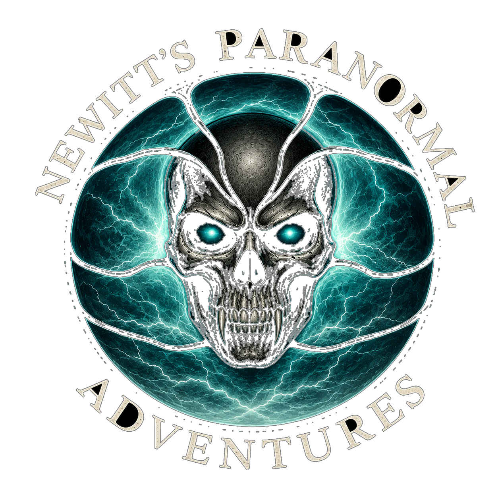

Paranormal Investigations
Investigating locations associated with reported paranormal activity and unexplained experiences.

Paranormal investigations, unusual locations, unexplained experiences and adventures after dark.
NEWITT's Paranormal Adventures explores unusual locations and investigates the stories, history and experiences connected to them.
The aim is to document the journey, investigate what can be experienced and share the adventure with the people following along.
Investigating locations associated with reported paranormal activity and unexplained experiences.
Exploring historic and unusual locations with fascinating stories, legends and reported experiences.
Real locations, real investigations and the atmosphere that comes when the lights go out.
NEWITT's Paranormal Adventures is growing one investigation at a time.
Historic buildings, unusual places and locations with stories worth investigating.
Investigations, clips and experiences are shared through the NEWITT Paranormal social channels.
As the project grows, original location photography will become part of the NEWITT Paranormal archive.
Paranormal investigations can involve stories, reports, personal experiences and unexplained events. NEWITT Media keeps those categories clear.
Where historical information is available, it should be treated as historical information and kept separate from paranormal claims.
Claims and reported experiences are presented as reports rather than automatically treating them as proven facts.
Personal experiences from an investigation are documented as experiences and remain open to interpretation.
The investigation kit will continue to develop as NEWITT's Paranormal Adventures grows.
Video equipment for documenting locations, investigations and experiences.
Equipment can be introduced and documented as the NEWITT Paranormal setup develops.
Dedicated photography will eventually allow us to create our own detailed visual record of the locations we investigate, using a camera system designed to grow with NEWITT Media.
See the latest paranormal adventures, investigations and clips on TikTok.
Paranormal exploration should never come at the expense of personal safety, property or the places being investigated.
Only investigate locations where appropriate permission or access has been obtained.
Stay aware of surroundings, hazards, other people and changing conditions.
Leave locations as they were found and respect historic buildings, owners, staff and other visitors.
NEWITT Media is designed with privacy in mind, including a no-unnecessary-cookies approach.
As NEWITT's Paranormal Adventures grows, the website will grow with it.
Future investigations can bring new locations, original photography, video, stories and experiences to the NEWITT Media archive.